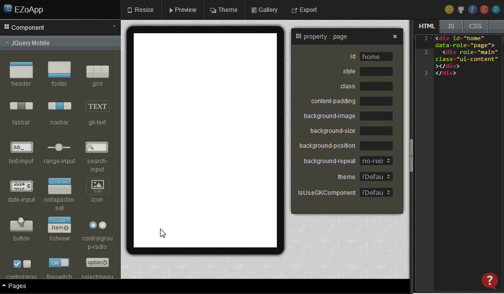
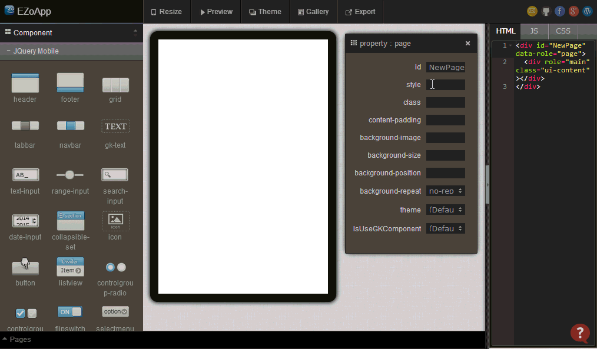
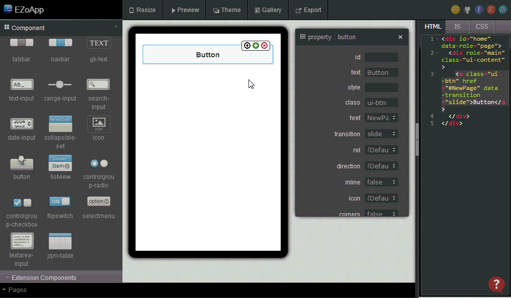

當我們在開發行動應用的時候，最常遇到的就是利用手勢或按鈕進行不同頁面的切換，有別於一般的網站，在行動裝置上的頁面切換，往往充斥著從上下左右飛進來的效果，甚至還有一些 3D 旋轉切換或淡入淡出的行為，而這些切換頁面的特效，也時常是一支 App 最重要的操作體驗。
許多開發者在剛接觸 App 的時候，總是在切換頁面效果的技術關鍵，感到相當的頭痛，也時常耗費許多的精力，自己打造一些切換效果但卻又不如預期，這個章節將介紹在完全不需要寫程式的狀況之下，使用 EZoApp 修改按鈕屬性，精確的設定各個頁面之間的切換效果與行為，輕鬆的開發出各式各樣華麗的切換特效，讓我們能夠更快速的開發，將精力和時間花在其他的細節或創意表現上。
範例連結：
基本元件實作 - 按鈕切換設定
為了展現頁面切換的效果，我們必須要新增一個新的頁面進行切換，而新增頁面的方式，就是點選最下方的頁面面版，點選新增頁面的按鈕新增頁面。
接著我們將頁面的背景改成藍色，讓切換的感覺更為明顯
頁面新增完成之後，我們回到一開始 home 的頁面，利用拖拉的方式，將 button 元件放入頁面當中，接著修改屬性面板的 href 屬性以及 transition 屬性，href 屬性代表要連結的頁面，transition 屬性則代表切換的效果。
button 元件總共包含了十種效果，分別是：default、slide、slideup、slidedown、slidefade、pop、fade、flip、flow 與 none，相關效果的呈現，可以點選範例進行實際了解。
設定完成後，按下預覽，就能夠欣賞相關的切換特效。

範例連結：
基本元件實作 - 按鈕切換設定